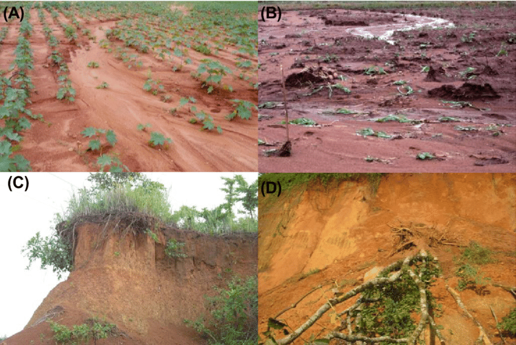
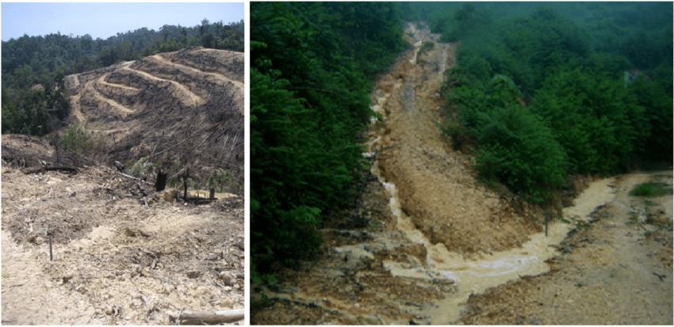
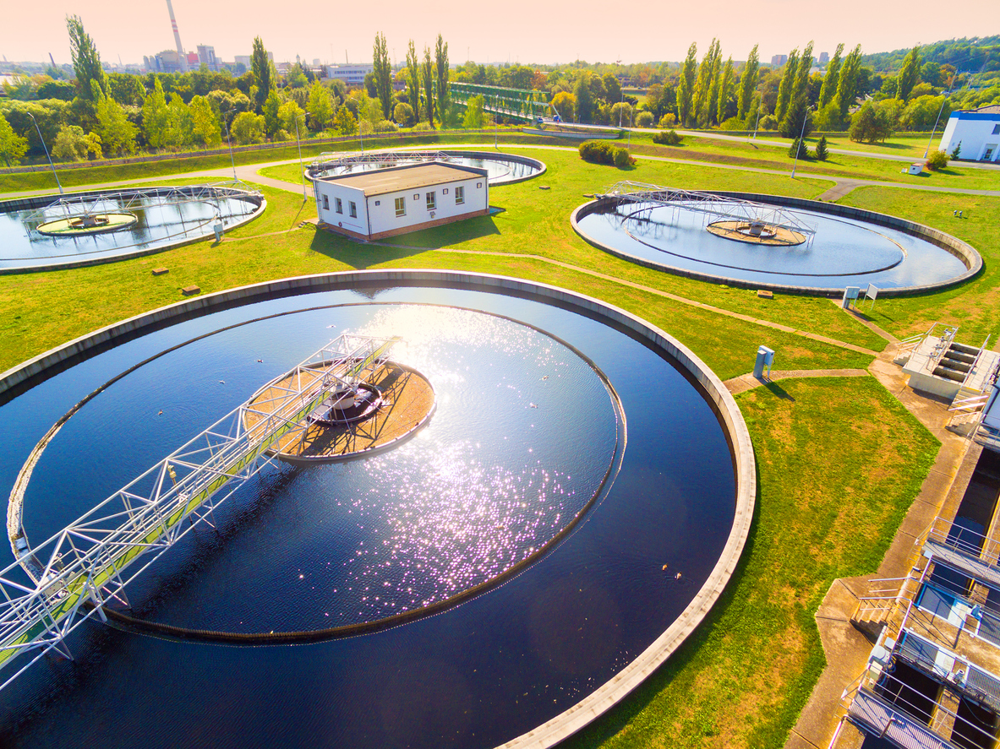
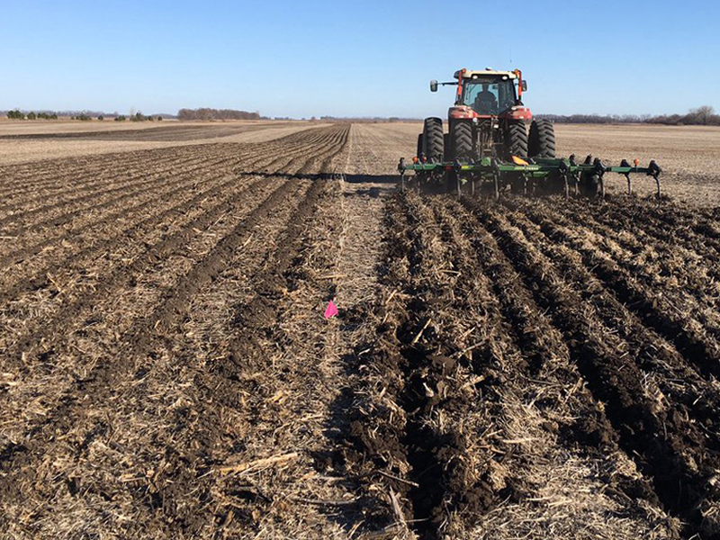
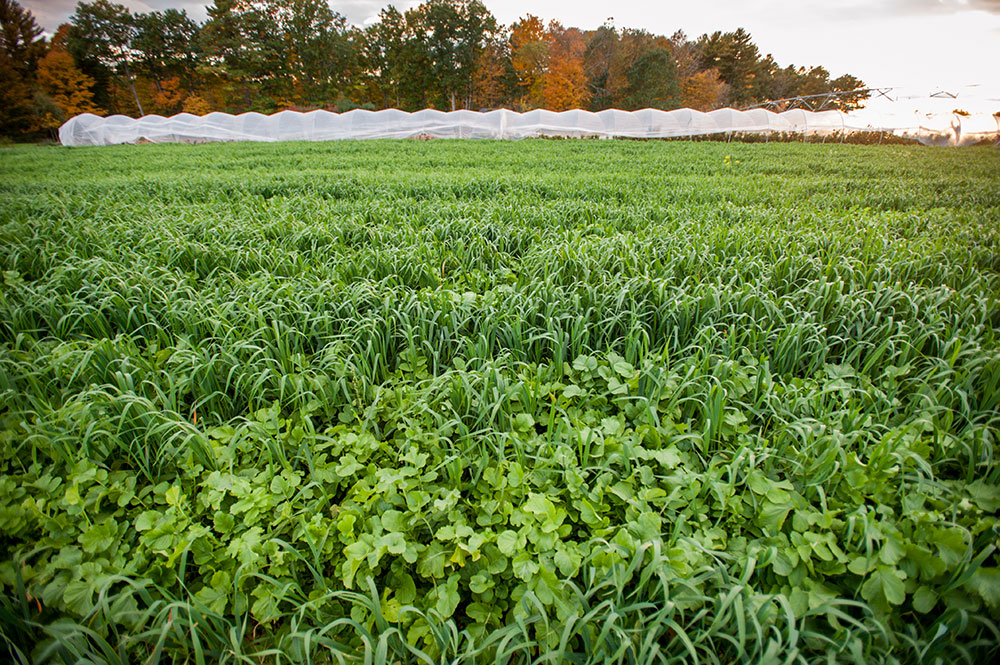
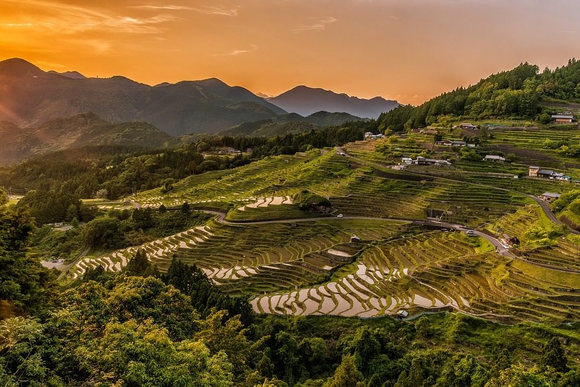

Impacts of Soil Erosion
Soil erosion is a natural process that occurs when soil particles are loosened or dislodged and carried away by wind or water. While soil erosion is a natural process, it has been accelerated by human activities such as deforestation, overgrazing, and intensive agriculture. This has led to a range of detrimental impacts on land, water, and biodiversity.
Reduced Agricultural Productivity
Soil erosion removes the fertile topsoil, rich in essential nutrients for crops, making agricultural land less productive. This can lead to lower crop yields, reduced food production, and economic hardship, particularly in developing nations.
Water Quality Degradation
Soil erosion carries sediments, including soil particles, organic matter, and pollutants, into waterways. These sediments can clog water filters, increasing turbidity and making water treatment more difficult.
The presence of pollutants, such as pesticides and fertilizers, can further degrade water quality, affecting aquatic life and posing health risks to humans who rely on this water source.
Loss of Biodiversity
Soil erosion destroys habitats, leading to the loss of plant and animal species.

As the soil structure degrades and vegetation cover diminishes, the ability of the land to support diverse ecosystems is compromised.
This loss of biodiversity has ramifications for ecological balance, ecosystem services, and the overall health of the environment.
Economic Impacts
The economic impacts of soil erosion extend beyond reduced agricultural productivity. The degradation of land and water resources can lead to increased costs for water treatment, infrastructure maintenance, and soil remediation efforts.
Additionally, the loss of biodiversity can affect tourism and recreational activities, further impacting local economies.
Addressing Soil Erosion: A Call for Sustainable Practices
Combating soil erosion requires a multifaceted approach that addresses both the natural and human-induced causes of this problem.
Sustainable land management practices, such as conservation tillage, cover cropping, and terracing, can help to protect the soil from erosion and improve soil health.
 Additionally, reducing deforestation, promoting sustainable grazing practices, and adopting less intensive agricultural methods can significantly reduce the human impact on soil erosion.
Protecting Our Soil for a Sustainable Future
Soil erosion is a complex issue with far-reaching consequences for land, water, biodiversity, and human well-being. By understanding the causes and impacts of soil erosion, we can take proactive steps to address this challenge and protect this vital resource for future generations. Embracing sustainable land management practices and advocating for policies that promote soil conservation are essential steps in ensuring a sustainable future for our planet.